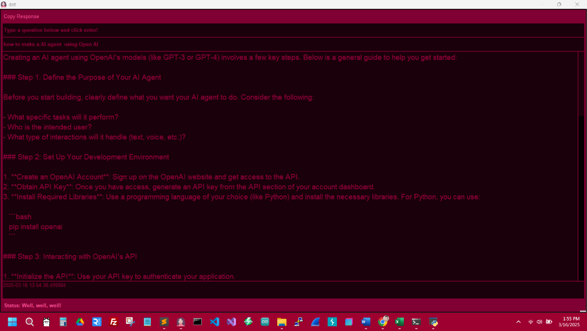
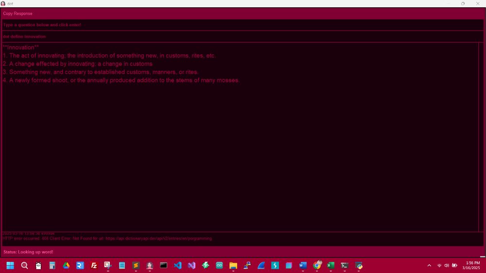
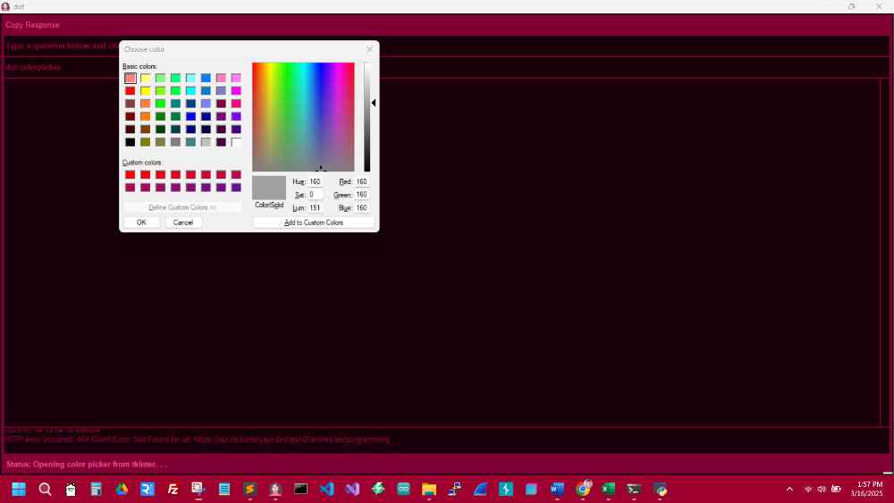
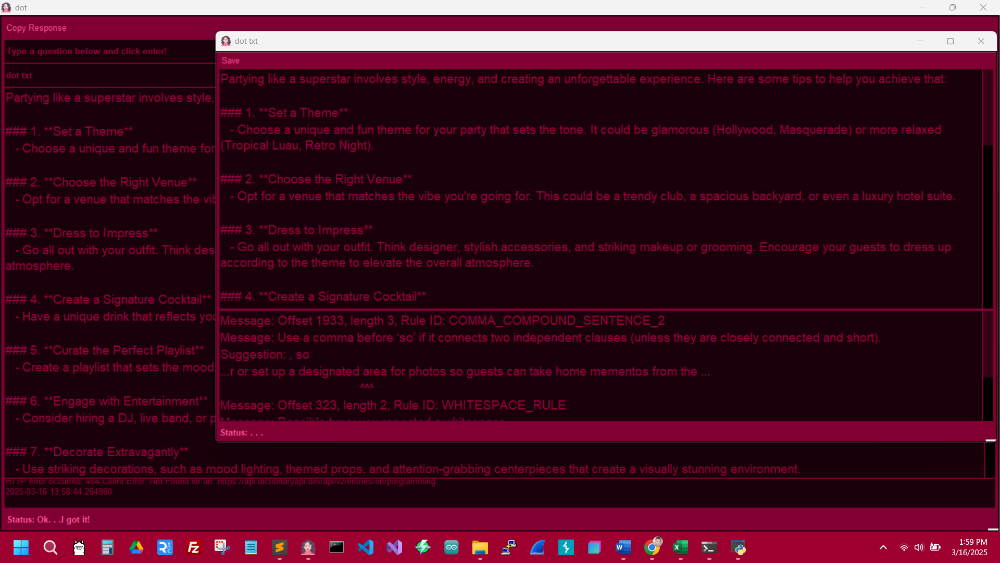

I am “on a quest” to build a personalized AI Agent that utilizes several different APIs, LLMs, modules, etc., to minimize tasks while maintaining the speed to retrieve information and perform automated functions without errors.
Some of the commands at the moment are:
“Just typing anything is currently grabbing a response from OpenAI.” As I enhance the learn feature(s), it is close to the same response, except for some formatting I have been working on. The idea is to ensure the data is always up to date and accurate. In the Projects section, see the OpenAI Turotial - Python to get started. If you would like me to explain any of this information in more detail, please get in touch with me through email.
“dot learn My name is Crissy while using the device. . .” After inserting this into the memory of the AI Agent, which SQL powers, and any other verified or accurate information, this will be used later when the Agent pulls information to sort through data and correct it for proper usage. This “learn” feature will also start stripping down much of the data, recording patterns, and assigning keywords. Eventually, once enough data is stored into the SQL file(s) (this feature is still in development), it will verify the use of the words or ideas with accurate definitions, constructing some response or action the Agent is performing. Also, I may eventually add a login for a user.
“dot define happy” This command just uses Free Dictionary API, a free resource for getting word definitions. As of now, it is extremely fast and accurate.
“dot color picker” This is a simple color picker created in Python/Tkinter to insert the color of your choosing in the response area. Although it is nothing fancy, the ability to grab the color code streamlines the process when a person is working on a design.
“dot txt” is a straightforward editor that outputs any grammatical errors so that a person can work in one app until later finishing up in their desired Word document software. The goal for the future is to enhance the text app so that it can format the data perfectly and output the information to a web browser for printing or saving as a PDF.
I am working on a few other features, but they are still not in use. The features above will work together allowing for accuracy of the data responses and automated processes, except the color picker. This is mainly just a project page for my portfolio, yet if you need a tutorial on anything included in this project, send an email, and I will get back to you as soon as possible.
See the screenshots below.



